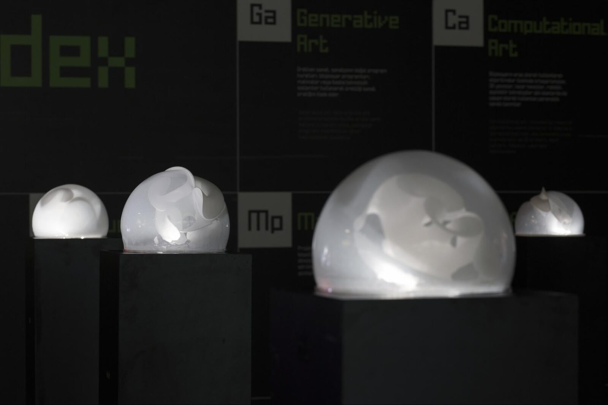
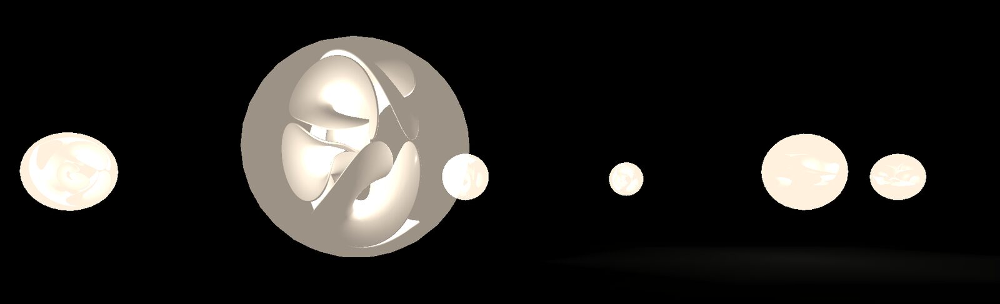
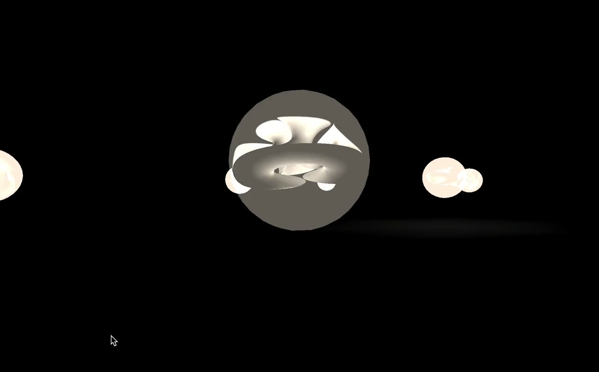
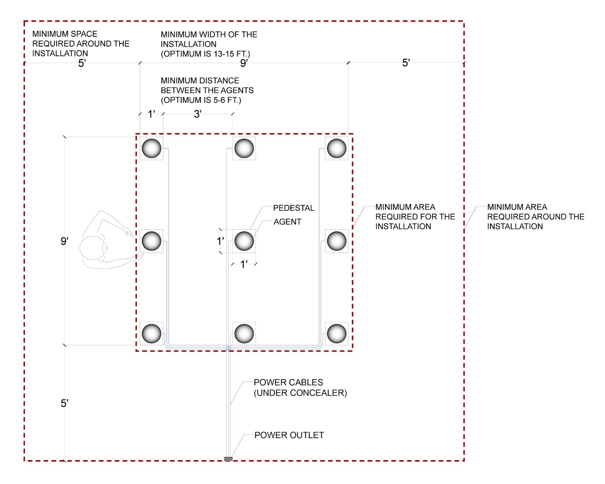

Cacophonic Choir
Cacophonic Choir
Hannah E. Wolfe*, Colby College
Şölen Kıratlı*, University of California, Santa Barbara
Alex Bundy, Planetarium Music
*equal contribution between authors
Abstract
Cacophonic Choir, an interactive installation aimed at bringing attention to the first-hand stories of sexual assault survivors, and the ways such stories may be distorted by the media and in online discourse, is composed of nine embodied vocalizing agents distributed in space. Each agent tells a story which is heard from a distance as an unintelligible choir of fragmented stories and distorted voices. As the viewer approaches an agent, the story becomes sonically clearer and semantically more coherent. When in the agent’s immediate personal space, the viewer can hear the first-hand account of a sexual assault survivor. The work has two versions, one intended for physically present exhibitions and the other for virtual exhibitions.
Project Description
Cacophonic Choir, an interactive installation aimed at bringing attention to the first-hand stories of sexual assault survivors, and the ways such stories may be distorted by the media and in online discourse, is composed of nine embodied vocalizing agents distributed in space. Each agent tells a story which is heard from a distance as an unintelligible choir of fragmented stories and distorted voices. As the viewer approaches an agent, the story becomes sonically clearer and semantically more coherent. When in the agent’s immediate personal space, the viewer can hear the first-hand account of a sexual assault survivor. The work has two versions, one intended for physically present exhibitions and the other for virtual exhibitions.
Cacophonic Choir (2019) ©Şölen Kıratlı & Hannah Wolfe.
Conceptual Description
By providing them with platforms for sharing their stories, digital and mass media can empower oppressed people as we have seen in the #meToo movement. It can, however, also expose these stories to doubt, distortion, and hostility. Media coverage of such painful events as sexual assault, especially combined with the hostility and distortion that one often finds in these platforms, can be extremely overwhelming to the survivors. Cacophonic Choir is aimed at both reflecting these feelings of being overwhelmed, and encouraging people to step away from these arenas to listen to individual survivors’ accounts. While sexual violence is a systematic problem, the experiences of those who have survived it are all different and deserve to be heard.
Designed to embody and reflect this feeling of inundation in the face of hostility and distortion, the installation highlights the first-hand stories of the sexual assault survivors. It is composed of nine embodied vocalizing agents distributed in space which, from a distance, all look alike. Their vocalizations are sonically distorted, semantically fragmented, and indistinguishable from one another, altogether forming an unintelligible choir. As the viewer approaches a particular agent, three things happen gradually. The given voice becomes sonically clear, the narration becomes semantically coherent, and the membrane that envelopes the agent gets brighter and more transparent, rendering the unique form inside visible. When in the agent’s immediate personal space, the viewer hears the first-hand account of a sexual assault survivor. Here, we are using spatial distance between the agent and the viewer as a metaphor for the ‘distance’ between the original story as told by the survivor and its renditions in social and mass media.


Fig. 1. Cacophonic Choir (2019) is composed of nine embodied vocalizing agents distributed in space. ©Şölen Kıratlı & Hannah Wolfe. Photo credit: Gökhan Tugay Şeker
Technical Description
The data used for this piece, consists of over 500 first-hand accounts of sexual assault survivors collected from The When You're Ready Project, an online platform for “survivors of sexual violence to share their stories and have their voices heard” [1]. The aim of this installation is not to inform the visitor precisely of statistics and data about sexual assault, but rather to reflect the ways in which the stories may be amplified or distorted in online media. To this end, using the textGenRNN library, we used stories from The When You're Ready Project to train an LSTM (long short-term memory) recurrent neural network model. The idea was to capture the system at various levels of training, so that we could modulate the original narrative, generating versions of the narrative with different levels of semantic distortion. We used text-to-speech synthesis to convert the generated texts to audio. This helped us modulate the linguistic and auditory coherence of these narratives based on the proximity of the observer to the narrator. Using a proximity sensor, we mapped distances between the agent and the viewer to the different training levels of the RNN (Figure 2) so that the full narrative is revealed only when one is in very close proximity to a given voice. The voice is also filtered based on the viewer’s proximity. The sonic response employs text-to-speech synthesis and granular synthesis to create a stuttering effect which dissipates as a visitor comes closer, representing how survivors' stories are distorted.
In addition to this semantic modulation, the installation also responds visually by illuminating from within. The body of each agent is composed of a sculptural form encased in a soft translucent membrane. Some of these forms are fully contained within the membrane, while others burst outwards. Proximity of the visitor modulates the light source within the membrane. As a result, the translucent membrane gets gradually more transparent as one approaches the agent, revealing the intricate geometric form within. Here, our intention was to reflect the fact that the individuals and their voices may look and sound alike from a distance, but when focused on individually, each is found to be complex and unique. Since opaqueness and transparency have strong connotations of privacy and publicness in many cultures, this simple light-based interaction, coupled with the material properties of the sculptural elements (i.e. transparency) allowed us to reflect the inherent tension in the public coverage of private events.
Installation Notes
Cacophonic Choir has two implementations: an embodied interactive installation, and a virtual environment built using the Unity framework. This work can be presented as a digital installation online, or a physical installation in person dependent on the venue’s space availability and travel restrictions.


Fig. 2. The current virtual version of the work can be found at cacophonic.cs.colby.edu.
In the virtual environment, the distance the visitor is from an agent modulates and spatializes their semantic and sonic coherence. As the visitor moves closer to an agent the membrane becomes more translucent, revealing the parametric form within. We are currently exploring different layouts and visualization techniques. The current version of the virtual environment reflects the original layout of the agents in the physical installation.

▶Virtual version of the work: cacophonic.cs.colby.edu
Installation Requirements
Remote Exhibition Requirements:
We will host the remote version of the work on our server.
In-Person Exhibition
Preferred space: 15 ft x 15 ft floor area minimum (see Fig. 2)


Fig 3. Exhibition Floor Plan
Space Requirements:
Needs complete darkness due to light sensitive technology
May slightly brighten up a darkened area
Needs a quiet space due to sound sensitive technology
Produces some sound, but only within the confines of the piece
Electrical Requirements:
We require power for each pedestal and the router. This could be done by connecting 9 extension cords which are a minimum of 5 ft in length. We will need concealers for these cords. We need at least one outlet.
Stand / Pedestal Requirements:
We require 9 pedestals or stands at around ear height or 4’-3”. Their top need to be 12” by 12”.
If we are provided pedestals, they need to have a hole of 4” diameter on the top and another hole at the bottom wide enough for two extension cords to go through. The pedestals need to have holes at sensor height (3-5 inches below the top).
Table I. Equipment Requirements | |
|---|---|
9 agents | Self |
Router | Self |
9 extension cords at least 5ft in length | Organization |
Cord concealers for extension cords | Organization |
9 stands or pedestals (see above) | Organization |
Installation Setup Time
We require a full day of installation time (8-12 hours).
Network requirements
If we need to push an update to the Raspberry Pi computers or troubleshoot one we will need to create a wifi hotspot. While this is not required during the exhibition, it is necessary for installing the work.
Media
Website: http://cacophonic.net/
Virtual experience: https://cacophonic.cs.colby.edu/
Video :
Feasibility
Cacophonic Choir was produced in 2019 and debuted in the sub-exhibition titled Plug-in ‘19, within Contemporary Istanbul, an international contemporary art fair. The piece was located in a fairly noisy environment, which prompted visitors to put their ears directly next to the agents in order to hear them over the din. This created an unintended but desirable level of intimacy while listening to these emotionally hard-to hear stories [2]. Furthermore, Cacophonic Choir was exhibited in SIGGRAPH ‘20, which took place virtually, and won SIGGRAPH Art Gallery’s “Best in Show” award. For this exhibition, we started developing a virtual version of the work [3] using Unity, which we then also exhibited in IEEE Visualization Conference’s Art Program ‘20. As of 2021, Cacophonic Choir continues to evolve in both virtual and physical platforms. We will continue exhibiting this work both in the digital and physical modalities and plan to study the differences in the way that visitors interact with the work virtually and in person.
Acknowledgments
We would like to thank Marko Peljhan, JoAnn Kuchera-Morin, Curtis Roads, and Alan Macy for their help and support, as well as Systemics Lab, AlloSphere Research Group, Media Arts and Technology Program (University of California, Santa Barbara), and Santa Barbara Center for Art, Science, and Technology (SBCAST).
Citations
Reid, Lauren. 2019. “The When You’re Ready Project”: www.whenyoureready.org/aboutwyr (accessed 14 February 2021)
↩Kıratlı, Şölen, Hannah E. Wolfe, and Alex Bundy. 2020. "Cacophonic choir: an interactive art installation embodying the voices of sexual assault survivors." Leonardo, Vol. 53, no. 4 (08.2020): 446-450, the MIT Press
↩Wolfe, Hannah E., Şölen Kıratlı, and Alex Bundy. 2020. “Cacophonic Choir - Virtual Experience”: https://cacophonic.cs.colby.edu/
↩